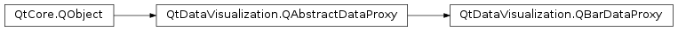

QtDataVisualization.QBarDataProxy¶
Inherited by: QtDataVisualization.QItemModelBarDataProxy
Synopsis¶
Functions¶
- def
addRows(rows) - def
addRows(rows, labels) - def
array() - def
columnLabels() - def
insertRows(rowIndex, rows) - def
insertRows(rowIndex, rows, labels) - def
itemAt(position) - def
itemAt(rowIndex, columnIndex) - def
removeRows(rowIndex, removeCount[, removeLabels=true]) - def
resetArray() - def
rowAt(rowIndex) - def
rowCount() - def
rowLabels() - def
series() - def
setColumnLabels(labels) - def
setItem(position, item) - def
setItem(rowIndex, columnIndex, item) - def
setRowLabels(labels) - def
setRows(rowIndex, rows) - def
setRows(rowIndex, rows, labels)
Signals¶
- def
arrayReset() - def
columnLabelsChanged() - def
itemChanged(rowIndex, columnIndex) - def
rowCountChanged(count) - def
rowLabelsChanged() - def
rowsAdded(startIndex, count) - def
rowsChanged(startIndex, count) - def
rowsInserted(startIndex, count) - def
rowsRemoved(startIndex, count) - def
seriesChanged(series)
Detailed Description¶
-
class
PySide2.QtDataVisualization.QtDataVisualization.QBarDataProxy([parent=nullptr])¶ Parameters: parent – PySide2.QtCore.QObject
-
PySide2.QtDataVisualization.QtDataVisualization.QBarDataProxy.addRows(rows, labels)¶ Parameters: - rows –
PySide2.QtDataVisualization.QtDataVisualization::QBarDataArray - labels – list of strings
Return type: PySide2.QtCore.int- rows –
-
PySide2.QtDataVisualization.QtDataVisualization.QBarDataProxy.addRows(rows) Parameters: rows – PySide2.QtDataVisualization.QtDataVisualization::QBarDataArrayReturn type: PySide2.QtCore.int
-
PySide2.QtDataVisualization.QtDataVisualization.QBarDataProxy.array()¶ Return type: PySide2.QtDataVisualization.QtDataVisualization::QBarDataArray
-
PySide2.QtDataVisualization.QtDataVisualization.QBarDataProxy.arrayReset()¶
-
PySide2.QtDataVisualization.QtDataVisualization.QBarDataProxy.columnLabels()¶ Return type: list of strings
-
PySide2.QtDataVisualization.QtDataVisualization.QBarDataProxy.columnLabelsChanged()¶
-
PySide2.QtDataVisualization.QtDataVisualization.QBarDataProxy.insertRows(rowIndex, rows, labels)¶ Parameters: - rowIndex –
PySide2.QtCore.int - rows –
PySide2.QtDataVisualization.QtDataVisualization::QBarDataArray - labels – list of strings
- rowIndex –
-
PySide2.QtDataVisualization.QtDataVisualization.QBarDataProxy.insertRows(rowIndex, rows) Parameters: - rowIndex –
PySide2.QtCore.int - rows –
PySide2.QtDataVisualization.QtDataVisualization::QBarDataArray
- rowIndex –
-
PySide2.QtDataVisualization.QtDataVisualization.QBarDataProxy.itemAt(position)¶ Parameters: position – PySide2.QtCore.QPointReturn type: PySide2.QtDataVisualization.QtDataVisualization::QBarDataItem
-
PySide2.QtDataVisualization.QtDataVisualization.QBarDataProxy.itemAt(rowIndex, columnIndex) Parameters: - rowIndex –
PySide2.QtCore.int - columnIndex –
PySide2.QtCore.int
Return type: PySide2.QtDataVisualization.QtDataVisualization::QBarDataItem- rowIndex –
-
PySide2.QtDataVisualization.QtDataVisualization.QBarDataProxy.itemChanged(rowIndex, columnIndex)¶ Parameters: - rowIndex –
PySide2.QtCore.int - columnIndex –
PySide2.QtCore.int
- rowIndex –
-
PySide2.QtDataVisualization.QtDataVisualization.QBarDataProxy.removeRows(rowIndex, removeCount[, removeLabels=true])¶ Parameters: - rowIndex –
PySide2.QtCore.int - removeCount –
PySide2.QtCore.int - removeLabels –
PySide2.QtCore.bool
- rowIndex –
-
PySide2.QtDataVisualization.QtDataVisualization.QBarDataProxy.resetArray()¶
-
PySide2.QtDataVisualization.QtDataVisualization.QBarDataProxy.rowAt(rowIndex)¶ Parameters: rowIndex – PySide2.QtCore.intReturn type: QVector
-
PySide2.QtDataVisualization.QtDataVisualization.QBarDataProxy.rowCount()¶ Return type: PySide2.QtCore.int
-
PySide2.QtDataVisualization.QtDataVisualization.QBarDataProxy.rowCountChanged(count)¶ Parameters: count – PySide2.QtCore.int
-
PySide2.QtDataVisualization.QtDataVisualization.QBarDataProxy.rowLabels()¶ Return type: list of strings
-
PySide2.QtDataVisualization.QtDataVisualization.QBarDataProxy.rowLabelsChanged()¶
-
PySide2.QtDataVisualization.QtDataVisualization.QBarDataProxy.rowsAdded(startIndex, count)¶ Parameters: - startIndex –
PySide2.QtCore.int - count –
PySide2.QtCore.int
- startIndex –
-
PySide2.QtDataVisualization.QtDataVisualization.QBarDataProxy.rowsChanged(startIndex, count)¶ Parameters: - startIndex –
PySide2.QtCore.int - count –
PySide2.QtCore.int
- startIndex –
-
PySide2.QtDataVisualization.QtDataVisualization.QBarDataProxy.rowsInserted(startIndex, count)¶ Parameters: - startIndex –
PySide2.QtCore.int - count –
PySide2.QtCore.int
- startIndex –
-
PySide2.QtDataVisualization.QtDataVisualization.QBarDataProxy.rowsRemoved(startIndex, count)¶ Parameters: - startIndex –
PySide2.QtCore.int - count –
PySide2.QtCore.int
- startIndex –
-
PySide2.QtDataVisualization.QtDataVisualization.QBarDataProxy.series()¶ Return type: PySide2.QtDataVisualization.QtDataVisualization::QBar3DSeries
-
PySide2.QtDataVisualization.QtDataVisualization.QBarDataProxy.seriesChanged(series)¶ Parameters: series – PySide2.QtDataVisualization.QtDataVisualization::QBar3DSeries
-
PySide2.QtDataVisualization.QtDataVisualization.QBarDataProxy.setColumnLabels(labels)¶ Parameters: labels – list of strings
-
PySide2.QtDataVisualization.QtDataVisualization.QBarDataProxy.setItem(rowIndex, columnIndex, item)¶ Parameters: - rowIndex –
PySide2.QtCore.int - columnIndex –
PySide2.QtCore.int - item –
PySide2.QtDataVisualization.QtDataVisualization::QBarDataItem
- rowIndex –
-
PySide2.QtDataVisualization.QtDataVisualization.QBarDataProxy.setItem(position, item) Parameters: - position –
PySide2.QtCore.QPoint - item –
PySide2.QtDataVisualization.QtDataVisualization::QBarDataItem
- position –
-
PySide2.QtDataVisualization.QtDataVisualization.QBarDataProxy.setRowLabels(labels)¶ Parameters: labels – list of strings
-
PySide2.QtDataVisualization.QtDataVisualization.QBarDataProxy.setRows(rowIndex, rows)¶ Parameters: - rowIndex –
PySide2.QtCore.int - rows –
PySide2.QtDataVisualization.QtDataVisualization::QBarDataArray
- rowIndex –
-
PySide2.QtDataVisualization.QtDataVisualization.QBarDataProxy.setRows(rowIndex, rows, labels) Parameters: - rowIndex –
PySide2.QtCore.int - rows –
PySide2.QtDataVisualization.QtDataVisualization::QBarDataArray - labels – list of strings
- rowIndex –
© 2018 The Qt Company Ltd. Documentation contributions included herein are the copyrights of their respective owners. The documentation provided herein is licensed under the terms of the GNU Free Documentation License version 1.3 as published by the Free Software Foundation. Qt and respective logos are trademarks of The Qt Company Ltd. in Finland and/or other countries worldwide. All other trademarks are property of their respective owners.